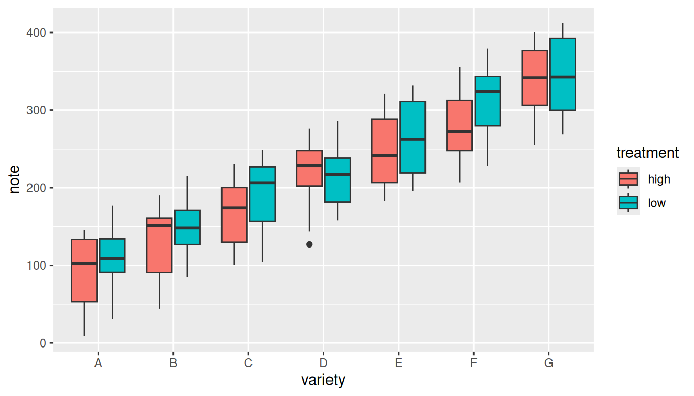
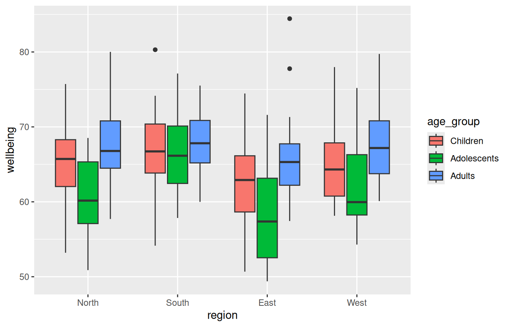
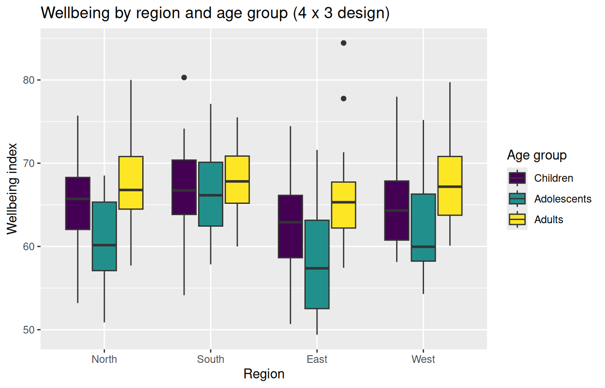

library(ggplot2)Responsible GenAI for Coding in R
Building a grouped boxplot with the BRAVE(R) framework
Purpose of the exercise
In this exercise you will learn how to use an AI tool to assist you with writing code in R using the BRAVE(R) framework and keeping human oversight. This is in contrast with letting the AI tool write the enitire code from scratch (ghostwriting): the AI produces R code to build a chart, but you do not learn how it works, and you cannot tell whether it is right.
Instead you will proceed as follows:
- Find reliable code from a trusted, curated source.
- Understand it line by line, using AI as a tutor, not an author.
- Adapt it to your own study design.
- Verify the result (human oversight).
During the exercise, AI is a sparring partner that explains and suggests. You remain the author and the final reviewer. If you cannot evaluate the output, that is a signal that you need to understand the topic better before you rely on the tool (human oversight).
Data safety reminder. Never paste private, unpublished, participant, or otherwise sensitive data into an AI tool. That is why this exercise uses simulated data that you generate yourself. The simulation code is provided below.
Learning objectives
By the end of this exercise you will be able to:
- Locate trustworthy graphics code in the R Graph Gallery.
- Read and annotate ggplot2 code so that every line has a comment in your own words.
- Adapt a grouped boxplot from a 7 × 2 to a 4 × 3 study design.
- Write prompts using the BRAVE(R) framework (Boundaries, Role, Audience, Variables, Expectations, Refine) to make Generative AI explain and refine code.
- Apply human-oversight checks to confirm the boxplot matches the data.
Set up your R environment
You only need to do one of the two options below.
Option A: You already have RStudio installed
Open RStudio.
Create a new R Markdown file (or just open this file):
File ▸ New File ▸ R Markdown…, then keep the HTML output and click OK. To open this handout:File ▸ Open File…and selectR_exercise.Rmd.Install the one package you need (run this once in the Console, not in a chunk):
install.packages("ggplot2")To run a code chunk, click the small green ▶ (“Run Current Chunk”) at the top-right of the chunk, or place your cursor in it and press Ctrl+Shift+Enter (Windows/Linux) / Cmd+Shift+Enter (Mac).
To produce the full HTML document, click Knit at the top of the editor.
Option B: You do not have RStudio: use Posit Cloud (in your browser)
Posit Cloud runs RStudio in the browser — nothing to install.
Go to https://posit.cloud and click Sign Up (the free plan is enough).
After logging in, click New Project ▸ New RStudio Project. Wait a few seconds for the workspace to load. You now have the full RStudio interface.
Upload this file: in the Files pane (bottom-right) click Upload, choose
R_exercise.Rmd, then click it to open.Install the package once in the Console:
install.packages("ggplot2")Run chunks with the green ▶ button and Knit exactly as in Option A.
Tip. On the free Posit Cloud plan, projects have limited monthly hours. Close the project tab when you are done so you don’t burn through your time.
Load the package
Once ggplot2 is installed, load it. This chunk runs at the top of every session.
Step 1: Study the reference graph
Open the R Graph Gallery page for a grouped boxplot:
https://r-graph-gallery.com/265-grouped-boxplot-with-ggplot2.html
The gallery example visualises 7 groups (varieties A–G) split into 2 subgroups (high / low) — a 7 × 2 design. The reference code builds its data and plot like this:
# --- Reference code from the R Graph Gallery (7 x 2 design) ---
# (Reproduced here only so you can compare it to your own version.)
variety <- rep(LETTERS[1:7], each = 40)
treatment <- rep(c("high", "low"), each = 20)
note <- seq(1:280) + sample(1:150, 280, replace = TRUE)
gallery_data <- data.frame(variety, treatment, note)
ggplot(gallery_data, aes(x = variety, y = note, fill = treatment)) +
geom_boxplot()
Notice the two ideas that make a grouped boxplot work:
- the group factor goes on the
xaxis (x = variety); - the subgroup factor goes in
fill = treatment, which splits each x position into one box per subgroup.
Step 2: Your scenario and simulated data
The situation. You want a grouped boxplot for your data, like the gallery example, but the gallery shows a 7 × 2 design and your study is 4 × 3. Suppose you have collected data from childeren, adolescents and adults about wellbeing in four different regions.
- Factor 1 =
region(4 levels):North,South,East,West - Factor 2 =
age_group(3 levels):Children,Adolescents,Adults - Response variable =
wellbeing: a continuous self-report index (higher = better). - 20 respondents per combination leads to 4 × 3 × 20 = 240 observations.
Run the chunk below to create the simulated dataset. The simulation is fully provided, is reproducible (set.seed), and uses no external files.
set.seed(123) # makes the random draw reproducible: everyone gets the same data
n_rep <- 20 # number of respondents per region x age_group combination
# Build every combination of respondent, age_group and region.
# expand.grid() varies the FIRST listed factor fastest.
study <- expand.grid(
respondent = 1:n_rep,
age_group = c("Children", "Adolescents", "Adults"),
region = c("North", "South", "East", "West")
)
# Effect sizes we are "baking into" the simulation, so we know the right answer.
region_effect <- c(North = 0, South = 3, East = -2, West = 1)
age_effect <- c(Children = 0, Adolescents = -4, Adults = 2) # an "adolescent dip"
# Build the response: baseline 65 + region effect + age effect + noise.
study$wellbeing <- 65 +
region_effect[as.character(study$region)] +
age_effect[as.character(study$age_group)] +
rnorm(nrow(study), mean = 0, sd = 6)
# Fix the order in which levels appear on the plot (instead of alphabetical).
study$region <- factor(study$region,
levels = c("North", "South", "East", "West"))
study$age_group <- factor(study$age_group,
levels = c("Children", "Adolescents", "Adults"))Step 3 — Understand the code before you change it
Here you use AI as a tutor to explain the reference code so that you understand every line. Use the BRAVE(R) framework to write a focused prompt.
A BRAVE(R) prompt to explain the reference code
The prompt might look like this:
Please explain, line by line, how the following R code builds a grouped boxplot (E – Expectations). For this task, take on the role of an R coding tutor (R – Role). The explanation should suit a researcher who knows basic R but is new to ggplot2 (A – Audience). For each line, tell me what it does and why it is needed, and explain specifically what the aes(), fill, and geom_boxplot() parts do (V – Variables). Keep it concise: one or two sentences per line, no rewritten code (B – Boundaries).
Copy the following prompt in an AI tool together with the R code:
Please explain, line by line, how the following R code builds a grouped boxplot. For this task, take on the role of an R coding tutor. The explanation should suit a researcher who knows basic R but is new to ggplot2. For each line, tell me what it does and why it is needed, and explain specifically what the aes(), fill, and geom_boxplot() parts do. Keep it concise: one or two sentences per line, no rewritten code.
ggplot(gallery_data, aes(x = variety, y = note, fill = treatment)) + geom_boxplot()
Verify
Read the explanation against the official ggplot2 documentation (?ggplot, ?aes, ?geom_boxplot in the Console, or https://ggplot2.tidyverse.org). If the explanation and the docs disagree, the docs win.
Refine
If a part is still unclear, follow up. This might be a Refine step of the BRAVE(R) framework. Copy and past this prompt into the AI tool:
I still don’t understand the difference between mapping a variable to fill versus to x. Can you explain what changes in the plot, with a one-line example for each?
Step 4: Adapt and build your plot
Remember the changes you want to make in the plot:
| Reference (7 × 2) | Your design (4 × 3) |
|---|---|
x = variety (7 groups) |
x = region (4 groups) |
fill = treatment (2 subgroups) |
fill = age_group (3 subgroups) |
y = note |
y = wellbeing |
data = gallery_data |
data = study |
A BRAVE(R) prompt to help you adapt the code
If you get stuck, ask AI to guide the change, not to hand you a finished script by using this example prompt:
I have a working grouped boxplot for a 7 × 2 design and a simulated dataset study for a 4 × 3 design with columns region (4 levels), age_group (3 levels) and wellbeing (V). I expect to adapt the code myself, so please tell me which arguments I need to change and why, rather than giving me the full solution (E, B). Act as an R tutor (R) writing for a social-science researcher new to ggplot2 (A). This is the code that I have now:
ggplot(gallery_data, aes(x = variety, y = note, fill = treatment)) + geom_boxplot()
Copy past your prompt in the AI tool and ajdust the code
I have a working grouped boxplot for a 7 × 2 design and a simulated dataset study for a 4 × 3 design with columns region (4 levels), age_group (3 levels) and wellbeing. I expect to adapt the code myself, so please tell me which arguments I need to change and why, rather than giving me the full solution. Act as an R tutor writing for a social-science researcher new to ggplot2. This is the code that I have now:_
ggplot(gallery_data, aes(x = variety, y = note, fill = treatment)) + geom_boxplot()
# >>> YOUR TASK: complete the grouped boxplot for the 4 x 3 design <<<
ggplot(___, aes(x = ____, y = ____, fill = ____)) +
geom_boxplot()If you have adjusted the code correctly, the plot should look like this:

Step 5: Human oversight, check the output
A plot is only useful if it faithfully represents the data. Before you trust it, run these checks yourself:
- Count the boxes. You should see 4 regions × 3 age groups = 12 boxes (4 x-axis positions, each split into 3 coloured boxes). If you see a different number, the mapping is wrong.
- Check the legend. It should list exactly the 3 age groups.
- Sanity-check against what you simulated. You built in an adolescent dip (
Adolescentslowest,Adultshighest) and madeSouththe highest region. Do the box positions broadly match that? If the chart contradicts the known truth, suspect the code, not the data.
Confirm your counts numerically. This is your “ground truth” to compare the plot against:
# How many boxes should appear, and is the design balanced?
nlevels(study$region) * nlevels(study$age_group) # expected number of boxes[1] 12table(study$region, study$age_group) # all cells should be 20
Children Adolescents Adults
North 20 20 20
South 20 20 20
East 20 20 20
West 20 20 20# Median wellbeing per cell — the plot's boxes should track these numbers.
aggregate(wellbeing ~ region + age_group, data = study, FUN = median) region age_group wellbeing
1 North Children 65.71991
2 South Children 66.72901
3 East Children 62.90977
4 West Children 64.31710
5 North Adolescents 60.16034
6 South Adolescents 66.15119
7 East Adolescents 57.37222
8 West Adolescents 59.96154
9 North Adults 66.78575
10 South Adults 67.81669
11 East Adults 65.30924
12 West Adults 67.18027Step 6 — Refine the plot
Once the core plot is correct, you can refine its appearance. Treat each refinement as a small change that can be reviewed. Add one layer, re-knit, look. A BRAVE(R) refine prompt might look like this:
My grouped boxplot is correct and I now want to polish it (E). As an R/ggplot2 tutor (R), for a researcher new to ggplot2 (A), suggest how to add a clear axis labels and a title, apply theme_minimal(), and choose colour-blind-friendly colours (V). Show me what I need to add to the R code below and add comments to each new line of code explaining what it does and why it is necessary to add (B).
Copy and past the prompt into the AI tool with the R code
My grouped boxplot is correct (see R code below) and I now want to polish it. As an R/ggplot2 tutor, for a researcher new to ggplot2, suggest how to add a clear axis labels and a title and choose colour-blind-friendly colours. Show me what I need to add to the R code below and add comments to each new line of code explaining what it does and why it is necessary to add.
ggplot(study, aes(x = region, y = wellbeing, fill = age_group)) + geom_boxplot()
A refined version would look like this:
ggplot(study, aes(x = region, y = wellbeing, fill = age_group)) +
geom_boxplot() +
labs(
title = "Wellbeing by region and age group (4 x 3 design)",
x = "Region",
y = "Wellbeing index",
fill = "Age group"
) +
scale_fill_viridis_d() 
Step 7 — Reflection
Write a few sentences in answer to each:
- Which BRAVE(R) component made the biggest difference to the usefulness of the AI’s answers, and why?
- Where did human oversight catch something the AI got wrong or that you simply needed to verify?
- How is “find reliable code and understand it” different from “ask the AI to write it for me” in terms of the reliability of your results?
- The simulation uses
set.seed(123). Why does reproducibility matter when you are checking whether your code is correct? —
Reference graph: R Graph Gallery, “Grouped boxplot with ggplot2” (https://r-graph-gallery.com/265-grouped-boxplot-with-ggplot2.html). BRAVE(R) framework: Fox & Boelen, GSLS GenAI Teacher Tutorial, Chapter 3, CC BY-SA-NC 4.0.